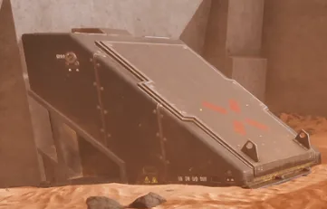
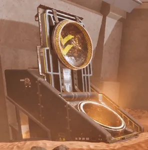
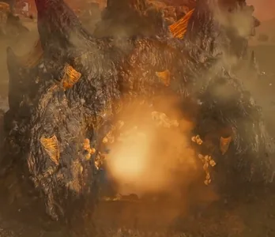
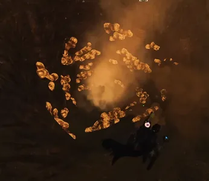
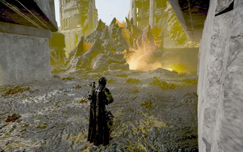
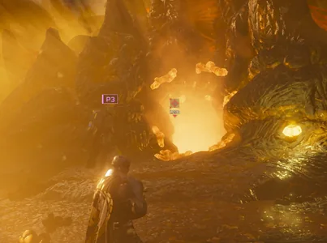

虫穴
Instructions: 结构解析 Tables For 每个 虫穴 Must be 已添加.
the 虫穴 is a  exclusive 建筑 found primarily in Bug Nests. These holes will continuously deploy new 终结族 units until they are destroyed. They are 通常 indicated by yellow-orangish spores in-游戏.
exclusive 建筑 found primarily in Bug Nests. These holes will continuously deploy new 终结族 units until they are destroyed. They are 通常 indicated by yellow-orangish spores in-游戏.
Locations[编辑 | 编辑 来源]
- 终结族 Hatcheries during the Purge Hatcheries 任务. (6+)
- 最多 任务 目标 (ex: 撤离 points, 地下 nursery’s)
结构解析[编辑 | 编辑 来源]
| 部件名称 | 生命值1 | 护甲值2 | 耐久2 | 主血量占比3 | Overflow 便帽?4 | 构造5 | 致命? | ExDR6 | 试玩版 之势 | |
|---|---|---|---|---|---|---|---|---|---|---|
| Inner Hole | - | 否 图像 | 不适用 | - | - | 无 | 是 | 0% | 20 if | |
| Outer | - | 否 图像 | 不适用 | - | - | 无 | 是 | 0% | 40 |
Disclaimer: 每个 highlighted 部分 with a 数量 has its own 生命值. Parts without a 数量 分享 生命值 pools.
- Note: This 机械师, known as Affected By 爆炸 can only occur 一次 per 爆炸, regardless of 100% ExDR parts hit, and the 爆炸's 护甲穿透 must 比赛 or exceed 主体护甲 to deal 伤害 对主血量. However, if the same 爆炸 has already damaged Main, this 机械师 will not trigger.
战术信息[编辑 | 编辑 来源]
- 虫穴 can only be destroyed in two ways:
- Damaging the inside of the 虫穴:
- With a 最小 爆破 之势 of 20, which requires an 爆炸伤害 类型.
- Damaging the outside of the 虫穴:
- With a 爆破 之势 of 40 or 更大 (which does NOT have to be 爆炸).
- Damaging the inside of the 虫穴:
- There are various 武器 and 战略配备 that can be used by 绝地潜兵 to 摧毁 虫穴:
- Throwing an 爆炸 类型 手榴弹 inside the 虫穴 will 摧毁 it. 烟雾弹 Grenades, 眩晕手榴弹, and Throwing Knives in particular do not have a 高 enough 爆破 之势 to 关闭 虫穴.
- Shooting a 手榴弹 inside the 虫穴 with the GL-21 榴弹发射器 or GP-31 榴弹手枪 will 摧毁 it. The GL-52 De-Escalator in particular does not do not have a 高 enough 爆破 之势 to 关闭 虫穴.
- Shooting 爆炸 武器库 into the 虫穴 will 摧毁 it. The R-36 Eruptor, AC-8 机炮, CB-9 Exploding Crossbow, and GR-8 无后坐力炮 are among 几个 武器 that can 关闭 虫穴.
- Certain 战略配备 or 武器 with a 试玩版 之势 of 40 or 更大 to 摧毁 the hole from the outside such as 鹰式空袭, 飞鹰 凝固汽油弹 Airstrikes, 飞鹰 烟雾弹 Strikes, 飞鹰 500kg 炸弹, 轨道激光炮, 轨道武器 毒气 打击, 轨道精准攻击, 120mm, 380mm, and Walking Barrages, FAF-14 飞矛, B-100 Portable Hellbomb or the GP-20 Ultimatum.
- 绝地喷射舱 战略配备 点赞 the 重新补给, or 任何 支援武器 绝地喷射舱 can be used to 关闭 the hole, given the 绝地喷射舱 lands on the 虫穴. 绝地潜兵 are advised that they 5月 not have access to what the 绝地喷射舱 would've supplied if they do this.
- 绝地潜兵 are advised that deploying 飞鹰/轨道武器/防御型 战略配备 while other 绝地潜兵 are present 5月 结果 in accidents.
中型 虫穴[编辑 | 编辑 来源]
- 中型 虫穴 will 通常 spawn 虫群 指挥官, 胆汁 喷吐者 and Nursing 喷吐者. Starting on
 不可能, 虫群 指挥官 are replaced by its 变体, the 阿尔法指挥官.
不可能, 虫群 指挥官 are replaced by its 变体, the 阿尔法指挥官.
吐酸泰坦 虫穴[编辑 | 编辑 来源]
- 吐酸泰坦 虫穴 will 通常 spawn 胆汁 Titans.
- If the Dragonroach is active on the 行星, 吐酸泰坦 虫穴 will spawn Chargers.
人造 虫穴[编辑 | 编辑 来源]
The 人造 虫穴 变体 can only be found in the tutorial. It is 不可能 to 跳跃 into one. It will 关闭 一次 it detects a 手榴弹 爆炸 inside itself.

The 人造 虫穴, closed
The 人造 虫穴, opened
吐酸泰坦 虫穴[编辑 | 编辑 来源]
the 吐酸泰坦 虫穴 can be found on  极难 missions and above, in specific 重型 Nests and mega Nests. Instead of 生成 小 终结族, it will spawn 胆汁 Titans. It is 许多 更大 than 标准 虫穴 and requires at 最少 爆破 力度 40 to 摧毁.
极难 missions and above, in specific 重型 Nests and mega Nests. Instead of 生成 小 终结族, it will spawn 胆汁 Titans. It is 许多 更大 than 标准 虫穴 and requires at 最少 爆破 力度 40 to 摧毁.
- Worth noting is that Hellpods have a 爆破 之势 of 40. Therefore, calling down a 绝地喷射舱 战略配备 onto the 吐酸泰坦 Hole will 关闭 it, though as mentioned earlier on this 页面, the called-down 战略配备 itself might 成为 inaccessible.
- It is also possible to have a 吐酸泰坦 carcass 崩溃 down onto the hole and 关闭 it. This can be achieved by 击倒中 a guarding 吐酸泰坦 without alerting it first, or eliminating one as it 出现 from the 虫穴.

关闭 up of a 吐酸泰坦 Hole on the edge of a Mega Nest.
Ditto
中型 虫穴[编辑 | 编辑 来源]
The 中型 虫穴 can be found on  挑战 or above as 部分 of 追踪虫 Lairs, in 重型 Nests, or Mega Nests
挑战 or above as 部分 of 追踪虫 Lairs, in 重型 Nests, or Mega Nests
The 中型 虫穴 shares the same 属性 as a 小 虫穴.

中型 虫穴 used for a 追踪虫巢穴
中型 虫穴, 绝地潜兵 for 鳞片
变更历史[编辑 | 编辑 来源]
1.006.300
2026-06-16
未记录变更
- 重型 虫巢 variation with the 小 hole adjacent to the 吐酸泰坦 hole has been moved so 摧毁 of the former does not 摧毁 the latter.